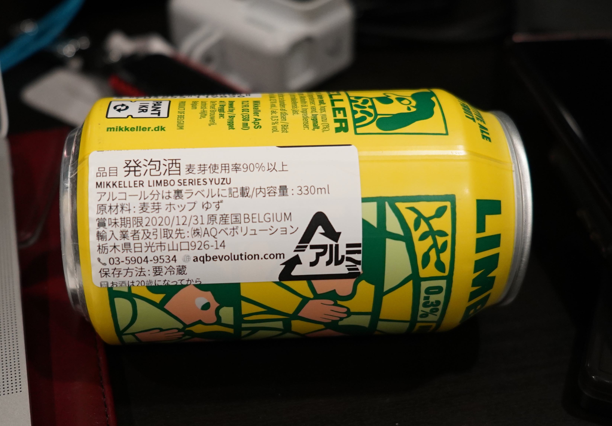

<!DOCTYPE html>
<html lang="en" itemscope itemtype="http://schema.org/WebPage">
  <head>
    

  <meta charset="utf-8" />
  <meta http-equiv="X-UA-Compatible" content="IE=edge">
  <meta name="viewport" content="width=device-width, initial-scale=1.0, maximum-scale=1.0">

  <title>ScrcpyでどこでもAndroidTV実機デバッグ - Satsuki&#39;s warehouse</title>
  <meta name="description" content="いろんなAdvent Carenderに登録しておいたのに、時間通りに出せていませんでしたがようやく。"><script type="application/ld+json">
{
    "@context": "http://schema.org",
    "@type": "WebSite",
    "name": "Satsuki\u0027s warehouse",
    
    "url": "https:\/\/blog.satsukies.dev\/"
}
</script><script type="application/ld+json">
{
  "@context": "http://schema.org",
  "@type": "Organization",
  "name": "",
  "url": "https:\/\/blog.satsukies.dev\/"
  
  
  
  
}
</script>
<script type="application/ld+json">
{
  "@context": "http://schema.org",
  "@type": "BreadcrumbList",
  "itemListElement": [{
        "@type": "ListItem",
        "position": 1,
        "item": {
          "@id": "https:\/\/blog.satsukies.dev\/",
          "name": "home"
        }
    },{
        "@type": "ListItem",
        "position": 3,
        "item": {
          "@id": "https:\/\/blog.satsukies.dev\/post\/20201220-scrcpy-with-androidtv\/",
          "name": "Scrcpyでどこでも android t v実機デバッグ"
        }
    }]
}
</script><script type="application/ld+json">
{
  "@context": "http://schema.org",
  "@type": "Article",
  "author": {
    "name" : ""
  },
  "headline": "ScrcpyでどこでもAndroidTV実機デバッグ",
  "description" : "いろんなAdvent Carenderに登録しておいたのに、時間通りに出せていませんでしたがようやく。",
  "inLanguage" : "en",
  "wordCount":  3744 ,
  "datePublished" : "2020-12-21T00:00:00",
  "dateModified" : "2020-12-21T00:00:00",
  "image" : "https:\/\/blog.satsukies.dev\/",
  "keywords" : [ "" ],
  "mainEntityOfPage" : "https:\/\/blog.satsukies.dev\/post\/20201220-scrcpy-with-androidtv\/",
  "publisher" : {
    "@type": "Organization",
    "name" : "https:\/\/blog.satsukies.dev\/",
    "logo" : {
        "@type" : "ImageObject",
        "url" : "https:\/\/blog.satsukies.dev\/",
        "height" :  60 ,
        "width" :  60
    }
  }
}
</script>

<meta property="og:title" content="ScrcpyでどこでもAndroidTV実機デバッグ" />
<meta property="og:description" content="いろんなAdvent Carenderに登録しておいたのに、時間通りに出せていませんでしたがようやく。">
<meta property="og:url" content="https://blog.satsukies.dev/post/20201220-scrcpy-with-androidtv/" />
<meta property="og:type" content="website" />
<meta property="og:site_name" content="Satsuki&#39;s warehouse" />

  <meta name="twitter:title" content="ScrcpyでどこでもAndroidTV実機デバッグ" />
  <meta name="twitter:description" content="いろんなAdvent Carenderに登録しておいたのに、時間通りに出せていませんでしたがようやく。">
  <meta name="twitter:card" content="summary" />
  <meta name="generator" content="Hugo 0.79.1" />
  <link rel="alternate" href="https://blog.satsukies.dev/index.xml" type="application/rss+xml" title="Satsuki&#39;s warehouse"><link rel="stylesheet" href="https://cdnjs.cloudflare.com/ajax/libs/KaTeX/0.10.0/katex.min.css" integrity="sha384-9eLZqc9ds8eNjO3TmqPeYcDj8n+Qfa4nuSiGYa6DjLNcv9BtN69ZIulL9+8CqC9Y" crossorigin="anonymous">
  <link rel="stylesheet" href="https://use.fontawesome.com/releases/v5.5.0/css/all.css" integrity="sha384-B4dIYHKNBt8Bc12p+WXckhzcICo0wtJAoU8YZTY5qE0Id1GSseTk6S+L3BlXeVIU" crossorigin="anonymous">
  <link rel="stylesheet" href="https://maxcdn.bootstrapcdn.com/bootstrap/3.3.7/css/bootstrap.min.css" integrity="sha384-BVYiiSIFeK1dGmJRAkycuHAHRg32OmUcww7on3RYdg4Va+PmSTsz/K68vbdEjh4u" crossorigin="anonymous"><link rel="stylesheet" href="https://blog.satsukies.dev/css/main.css" /><link rel="stylesheet" href="https://fonts.googleapis.com/css?family=Lora:400,700,400italic,700italic" />
  <link rel="stylesheet" href="https://fonts.googleapis.com/css?family=Open+Sans:300italic,400italic,600italic,700italic,800italic,400,300,600,700,800" /><link rel="stylesheet" href="https://blog.satsukies.dev/css/syntax.css" /><link rel="stylesheet" href="https://blog.satsukies.dev/css/codeblock.css" /><link rel="stylesheet" href="https://cdnjs.cloudflare.com/ajax/libs/photoswipe/4.1.2/photoswipe.min.css" integrity="sha384-h/L2W9KefUClHWaty3SLE5F/qvc4djlyR4qY3NUV5HGQBBW7stbcfff1+I/vmsHh" crossorigin="anonymous">
  <link rel="stylesheet" href="https://cdnjs.cloudflare.com/ajax/libs/photoswipe/4.1.2/default-skin/default-skin.min.css" integrity="sha384-iD0dNku6PYSIQLyfTOpB06F2KCZJAKLOThS5HRe8b3ibhdEQ6eKsFf/EeFxdOt5R" crossorigin="anonymous">
<link rel="stylesheet" href="https://blog.satsukies.dev/css/amazon.css">


<script type="application/javascript">
var doNotTrack = false;
if (!doNotTrack) {
	window.ga=window.ga||function(){(ga.q=ga.q||[]).push(arguments)};ga.l=+new Date;
	ga('create', 'UA-166867736-1', 'auto');
	
	ga('send', 'pageview');
}
</script>
<script async src='https://www.google-analytics.com/analytics.js'></script>


  </head>
  <body>
    <nav class="navbar navbar-default navbar-fixed-top navbar-custom">
  <div class="container-fluid">
    <div class="navbar-header">
      <button type="button" class="navbar-toggle" data-toggle="collapse" data-target="#main-navbar">
        <span class="sr-only">Toggle navigation</span>
        <span class="icon-bar"></span>
        <span class="icon-bar"></span>
        <span class="icon-bar"></span>
      </button>
      <a class="navbar-brand" href="https://blog.satsukies.dev/">Satsuki&#39;s warehouse</a>
    </div>

    <div class="collapse navbar-collapse" id="main-navbar">
      <ul class="nav navbar-nav navbar-right">
        

        

        
      </ul>
    </div>

    

  </div>
</nav>


    


<div class="pswp" tabindex="-1" role="dialog" aria-hidden="true">

<div class="pswp__bg"></div>

<div class="pswp__scroll-wrap">
    
    <div class="pswp__container">
      <div class="pswp__item"></div>
      <div class="pswp__item"></div>
      <div class="pswp__item"></div>
    </div>
    
    <div class="pswp__ui pswp__ui--hidden">
    <div class="pswp__top-bar">
      
      <div class="pswp__counter"></div>
      <button class="pswp__button pswp__button--close" title="Close (Esc)"></button>
      <button class="pswp__button pswp__button--share" title="Share"></button>
      <button class="pswp__button pswp__button--fs" title="Toggle fullscreen"></button>
      <button class="pswp__button pswp__button--zoom" title="Zoom in/out"></button>
      
      
      <div class="pswp__preloader">
        <div class="pswp__preloader__icn">
          <div class="pswp__preloader__cut">
            <div class="pswp__preloader__donut"></div>
          </div>
        </div>
      </div>
    </div>
    <div class="pswp__share-modal pswp__share-modal--hidden pswp__single-tap">
      <div class="pswp__share-tooltip"></div>
    </div>
    <button class="pswp__button pswp__button--arrow--left" title="Previous (arrow left)">
    </button>
    <button class="pswp__button pswp__button--arrow--right" title="Next (arrow right)">
    </button>
    <div class="pswp__caption">
      <div class="pswp__caption__center"></div>
    </div>
    </div>
    </div>
</div>


  
  
  


  

  <header class="header-section ">
    
    <div class="intro-header no-img">
      <div class="container">
        <div class="row">
          <div class="col-lg-8 col-lg-offset-2 col-md-10 col-md-offset-1">
            <div class="post-heading">
              
                <h1>ScrcpyでどこでもAndroidTV実機デバッグ</h1>
              
              
              
              
                <span class="post-meta">
  
  
  <i class="fas fa-calendar"></i>&nbsp;
  
  
  
  
    
      &nbsp;|&nbsp;<i class="fas fa-user"></i>&nbsp;
    
  
  
</span>


              
            </div>
          </div>
        </div>
      </div>
    </div>
  </header>


    
<div class="container" role="main">
  <div class="row">
    <div class="col-lg-8 col-lg-offset-2 col-md-10 col-md-offset-1">
      <article role="main" class="blog-post">
        <p>いろんなAdvent Carenderに登録しておいたのに、時間通りに出せていませんでしたがようやく。。。</p>
<p>ということで、この記事は</p>
<ul>
<li><a href="https://adventar.org/calendars/5711">CyberAgent Developers Advent Calendar 2020</a>の5日目</li>
<li><a href="https://adventar.org/calendars/5743">飲酒プログラミング Advent Calendar 2020</a>の8日目</li>
</ul>
<p>です。</p>
<p>AndroidTVに関するネタにしようと決めてはいたので、AndroidTVアプリ開発でのちょっとしたつらみと、それに対して最近見つけた解決策を書いてみようと思う。</p>
<p>ちなみに本記事は今年のベストバイ候補、MacBook Air(M1)くんで執筆しました。最高。</p>
<h1 id="ここがつらいよandroidtv">ここがつらいよAndroidTV</h1>
<p>AndroidTV向けアプリの開発をやっている方なら誰しもが悩んだことがあるんじゃないかと思う（思いたい？）が、実機でデバッグ作業をしようと思うとPCとは別にディスプレイが必要で、これが結構大変。</p>
<p>有り得そうな話として、不運にも外出中に「障害が起きたのでみて欲しい」と言われてしまった場合は絶望的。丸腰だと実機での確認すら十分にできないので、自分は万が一にモバイルディスプレイを持って歩いていることもありました。（もとから常に大荷物で行動するタイプであるということは気にしてはいけません。）</p>
<p>例えばこういうやつ
<div class="amazon-widget">
  <a target="_blank" href="https://www.amazon.co.jp/gp/product/B07T365S3F/?tag=satsukies0d-22"></a>
  <div class="amazon-widget-img">
    
  </div>
  <div class="amazon-widget-info">
    <span class="amazon-widget-title">
      cocopar 12.5インチ/4K adobe100色域 HDR/モバイルモニター/モバイルディスプレイ/薄型/IPSパネル/USB Type-C/標準HDMI/mini DP/保護カバー付/580g/3年保証 (カバー無し)
    </span>
    <span class="amazon-widget-via">
      
      amazon.co.jp
    </span>
  </div>
</div></p>
<p>とはいえ、PCだけでも大荷物になるのに、実機+外部ディスプレイを持って歩くのは現実的ではないです。やってたけどね。</p>
<h1 id="最初に思いついた作戦hdmiキャプチャで取り込む">最初に思いついた作戦：HDMIキャプチャで取り込む</h1>
<p>ディスプレイ持って歩くのはやはり大変。外部ディスプレイ不要な方法がないものかと考えました。</p>
<p>最初に思いついたのが、ゲーマーなどがプレイ動画を取り込むために使うようなHDMIキャプチャ。</p>
<p>HDMIキャプチャにも種類がありますが、UVC（USB Video Class）という規格に対応してる製品がおすすめ。</p>
<div class="amazon-widget">
  <a target="_blank" href="https://www.amazon.co.jp/gp/product/B07CZRHX2V/?tag=satsukies0d-22"></a>
  <div class="amazon-widget-img">
    
  </div>
  <div class="amazon-widget-info">
    <span class="amazon-widget-title">
      I-O DATA USB HDMI変換アダプター テレワーク Web会議向け UVC/キャプチャー/HDMI×1/mac対応/土日サポート/GV-HUVC
    </span>
    <span class="amazon-widget-via">
      
      amazon.co.jp
    </span>
  </div>
</div>
<p>これにスティック型のAndroidTVデバイスを刺し、キャプチャのプレビュー画面を見て操作する、という作戦を思いついたわけです。</p>
<p>当時の自分は、我ながら完璧だ、完全勝利と確信し機材を買い揃えました。</p>
<p>以下がその機材たち。GV-HUVCとFireTVがダイレクト接続されていて、GV-HUVCの右側の端子とPCを接続する想定だったわけ。</p>
<p></p>
<p>フラグ立てまくったので、結果はもうお分かりだと思いますが <strong>見事に完敗</strong> 。理由はただ1つで、HDCPによって画面が表示できなかった、という点が影響してしまった模様。</p>
<h1 id="悩めるandroidtverの救世主scrcpy">悩めるAndroidTVerの救世主scrcpy</h1>
<p>上記以来、半ば諦めた感じでモバイルディスプレイを使っていました。</p>
<p>今年の9月か10月ぐらいのある日、社のSlackで「scrcpyというツール使うとPCにスマホ画面を表示できるらしい」という情報が流れていたのを発見。</p>
<p>scrcpyはGenymobileが公開しているAndroidデバイス制御ツールで、ごく簡単な手順でPCからAndroid端末の画面表示をミラーリングしたり、PC側から操作したりすることができる。</p>
<p>詳細は以下のGitHubリポジトリを参照。</p>
<p><a href="https://github.com/Genymobile/scrcpy">Genymobile/scrcpy</a></p>
<p>MacユーザでHomebrewが使える環境であれば、 <code>brew install scrcpy</code> を実行すれば完了。
コーヒーを淹れる余裕もないぐらい簡単です。</p>
<p>インストールできたら、表示したいAndroidデバイスがadb接続されている状態で <code>scrcpy</code> を実行すると、PC側にAndroidデバイスの画面が表示されます。</p>
<p><!-- raw HTML omitted -->
<a href="https://github.com/Genymobile/scrcpy">Genymobile/scrcpy</a>より引用</p>
<p>Androidスマートフォンで動くなら、もしかしてAndroidTVでも動くのでは？と思い、普段使っているFireTVを接続して実行してみたところ、あっさり表示されるではないか。</p>
<p>実際に動作させている様子はこのような感じ。
</p>
<p>夢にまでみたこの環境。<code>scrcpy</code>のおかげでついにこれを実現することに成功したわけです。
ほんとにPCと実機、そしてそれらを繋ぐためのケーブルの3点セットだけで良いのです。それぞれを繋ぐだけで、PCがディスプレイに早変わり。必要最小限の荷物だけで、どこでも動作確認できるようになりました。これは肩に本当に優しい。</p>
<h1 id="scrcpyをより使いこなすためのポイント">scrcpyをより使いこなすためのポイント</h1>
<p>そのままでも便利ツールであることは間違いないのだが、業務で使うとなると使い勝手を求めたくなってしまう。</p>
<p><code>scrcpy --help</code>としてもらうだけでも、本当にたくさんのオプションが提供されていることがわかると思う。ここには全部は載せないので、ぜひ一度どんなことができるのかご自身の目で確かめて欲しいと思う。</p>
<p>その中でも、特に自分が普段使う際に気を遣う点や、指定しているオプションについて紹介しようと思う。</p>
<h2 id="1-デバイスは有線で繋ぐ">1. デバイスは有線で繋ぐ</h2>
<p>外部ディスプレイを使わないという前提があるので事実上必須ではあるのだが、実機はUSB接続で。</p>
<p>理由はいくつかある。</p>
<ol>
<li>大体のAndroidTVデバイスがUSBによる給電が必須。バッテリー持ってる端末はあまり見たことがない。</li>
<li>画面が見えないので、払い出されているIPアドレスがわからない。無闇に <code>adb connnect {{ip addr}}:5555</code> とかしたくないし。</li>
<li>画面表示の安定感（操作に対するレスポンス、フレームレート、etc）が増す。後述のオプションと組み合わせるとより安定する。</li>
</ol>
<p>どうしても有線がつらい、ということであれば、最初だけ有線でつないでIPアドレスを確認してから切断、別ルートで電源供給しつつデバイスがブートし終わったと思ったらすかさず <code>scrcpy</code> を実行すれば良いと思う。</p>
<h2 id="2--m-オプションで最大解像度を制限しよう">2. <code>-m</code> オプションで最大解像度を制限しよう</h2>
<p>デバイスを有線で接続した場合でも、レスポンスが悪いと感じることがある。</p>
<p>さまざまな理由や原因が関連しているとは思うが、主目的はデバッグなので、ある程度ちゃんと表示されていれば良いはずだ。</p>
<p>そんなとき役に立つのが <code>-m</code> オプションである。</p>
<pre><code>-m, --max-size value
        Limit both the width and height of the video to value. The
        other dimension is computed so that the device aspect-ratio
        is preserved.
        Default is 0 (unlimited).
</code></pre><p>その名の通り、最大解像度を制限できるオプションで、アスペクト比を維持した状態で制限をかけてくれる。</p>
<p>例えば、 <code>-m 1280</code>とすると、AndroidTVは基本16:9表示なので横幅が1280に制限され、アスペクト比から縦幅が720となって表示される。</p>
<p>このオプションをつける目的は2つ。</p>
<ol>
<li>PCでの画面占有領域を必要最小限にする</li>
<li>解像度を下げることで、表示の安定性向上を狙う</li>
</ol>
<p>有線で繋ぐのと併用することで、だいぶ安定してきます。</p>
<h2 id="3-max-fpsも制限して安定性向上を狙え">3. Max FPSも制限して安定性向上を狙え</h2>
<p>これまた実行時引数で指定するオプションに、 <code>--max-fps</code> というオプションが存在している。名前の通りで、表示画面のFPSを制限することができるものだ。</p>
<pre><code>--max-fps value
        Limit the frame rate of screen capture (officially supported
        since Android 10, but may work on earlier versions).
</code></pre><p>個人的には30fpsぐらいで十分なので、一応指定している。設定するモチベーションは、表示の安定化を狙っているのは言うまでもないでしょう。</p>
<h2 id="4-スクリーンレコードもscrcpyでやってしまえ">4. スクリーンレコードもscrcpyでやってしまえ</h2>
<p>PRに添付するために、動作の様子をスクリーンレコードすることってよくありませんか。今までAndroid Studioからぽちぽちして収録してたんですが、ちょっと面倒でした。</p>
<p>scrcpyには <code>-r {{ファイル名}}</code> でスクリーンレコードができちゃいます。便利。</p>
<p>いつもDownloadsフォルダにスクリーンレコードの結果を保存して、シュッとPRに貼り付ける、という流れで作業してます。GUIに触れずにCLIからぽんぽん収録作業できるので、ストレスフリー。</p>
<h1 id="まとめ">まとめ</h1>
<p><code>scrcpy</code> is GOD</p>
<p>これが1番速いと思います。</p>
<h1 id="appendix-酒に関する話">Appendix: 酒に関する話</h1>
<p>飲酒プログラミングというアドカレの記事でもあるので、少しは酒の話も。</p>
<p>先日クラフトビールが飲めるお店に行ったのですが、そこではノンアルコール飲料がよくあるビールテイスト（ドライゼロみたいなやつ）以外に、輸入品？のノンアルコールビールが置いてありました。</p>
<p>そのうちの一つが、MIKKELLER LIMBO SERIES YUZUです。</p>
<p></p>
<p>ノンアルコールという名称で提供されていたので、ドライバーも安心して楽しめる、と思ったのですが…ラベルを見てびっくり。</p>
<p></p>
<p>いやがっつり発泡酒って書いてあるやん！</p>
<p>厚生労働省のHPに記載されている、日本での <code>ノンアルコール飲料</code> の定義では、</p>
<blockquote>
<p>酒税法の第2条で、酒類は「アルコール分1度以上の飲料」と定義されています。したがって、ノンアルコール飲料とは、含有アルコール量が1%未満の飲料です。この解釈にしたがうと、普通の清涼飲料水はすべて含まれることになりますが、ノンアルコール飲料というと、通常は外観、味、香りなどが酒類に似ているものを指します。</p>
</blockquote>
<p>ということのようです。</p>
<p>cf. <a href="https://www.e-healthnet.mhlw.go.jp/information/dictionary/alcohol/ya-060.html">https://www.e-healthnet.mhlw.go.jp/information/dictionary/alcohol/ya-060.html</a></p>
<p>このLIMBO SERIES YUZUも缶に0.3%という記載があるので、くくりとしてはノンアルコールで間違ってはない？んですかね。</p>
<p>ただ飲みすぎたら普通に呼気検査引っかかりそうじゃない？というか1本でもだいぶ不安になるレベル。</p>
<p>誰かこの辺の話に詳しい人いたら教えてください。</p>
<p>ということで、これから開けて飲んでみようと思います。ではまた。</p>


        

        

        
      </article>

      
        <ul class="pager blog-pager">
          
            <li class="previous">
              <a href="https://blog.satsukies.dev/post/20200608-books-ooui/" data-toggle="tooltip" data-placement="top" title="「オブジェクト指向UIデザイン」購入した">&larr; Previous Post</a>
            </li>
          
          
        </ul>
      


      

    </div>
  </div>
</div>

      
<footer>
  <div class="container">
    <div class="row">
      <div class="col-lg-8 col-lg-offset-2 col-md-10 col-md-offset-1">
        <ul class="list-inline text-center footer-links">
          
          
        </ul>
        <p class="credits copyright text-muted">
          

          &nbsp;&bull;&nbsp;&copy;
          
            2020
          

          
            &nbsp;&bull;&nbsp;
            <a href="https://blog.satsukies.dev/">Satsuki&#39;s warehouse</a>
          
        </p>
        
        <p class="credits theme-by text-muted">
          <a href="https://gohugo.io">Hugo v0.79.1</a> powered &nbsp;&bull;&nbsp; Theme <a href="https://github.com/halogenica/beautifulhugo">Beautiful Hugo</a> adapted from <a href="https://deanattali.com/beautiful-jekyll/">Beautiful Jekyll</a>
          
        </p>
      </div>
    </div>
  </div>
</footer><script src="https://cdnjs.cloudflare.com/ajax/libs/KaTeX/0.10.0/katex.min.js" integrity="sha384-K3vbOmF2BtaVai+Qk37uypf7VrgBubhQreNQe9aGsz9lB63dIFiQVlJbr92dw2Lx" crossorigin="anonymous"></script>
<script src="https://cdnjs.cloudflare.com/ajax/libs/KaTeX/0.10.0/contrib/auto-render.min.js" integrity="sha384-kmZOZB5ObwgQnS/DuDg6TScgOiWWBiVt0plIRkZCmE6rDZGrEOQeHM5PcHi+nyqe" crossorigin="anonymous"></script>
<script src="https://code.jquery.com/jquery-1.12.4.min.js" integrity="sha256-ZosEbRLbNQzLpnKIkEdrPv7lOy9C27hHQ+Xp8a4MxAQ=" crossorigin="anonymous"></script>
<script src="https://maxcdn.bootstrapcdn.com/bootstrap/3.3.7/js/bootstrap.min.js" integrity="sha384-Tc5IQib027qvyjSMfHjOMaLkfuWVxZxUPnCJA7l2mCWNIpG9mGCD8wGNIcPD7Txa" crossorigin="anonymous"></script>

<script src="https://blog.satsukies.dev/js/main.js"></script><script> renderMathInElement(document.body); </script><script src="https://cdnjs.cloudflare.com/ajax/libs/photoswipe/4.1.2/photoswipe.min.js" integrity="sha384-QELNnmcmU8IR9ZAykt67vGr9/rZJdHbiWi64V88fCPaOohUlHCqUD/unNN0BXSqy" crossorigin="anonymous"></script>
<script src="https://cdnjs.cloudflare.com/ajax/libs/photoswipe/4.1.2/photoswipe-ui-default.min.js" integrity="sha384-m67o7SkQ1ALzKZIFh4CiTA8tmadaujiTa9Vu+nqPSwDOqHrDmxLezTdFln8077+q" crossorigin="anonymous"></script><script src="https://blog.satsukies.dev/js/load-photoswipe.js"></script>


    
  </body>
</html>

